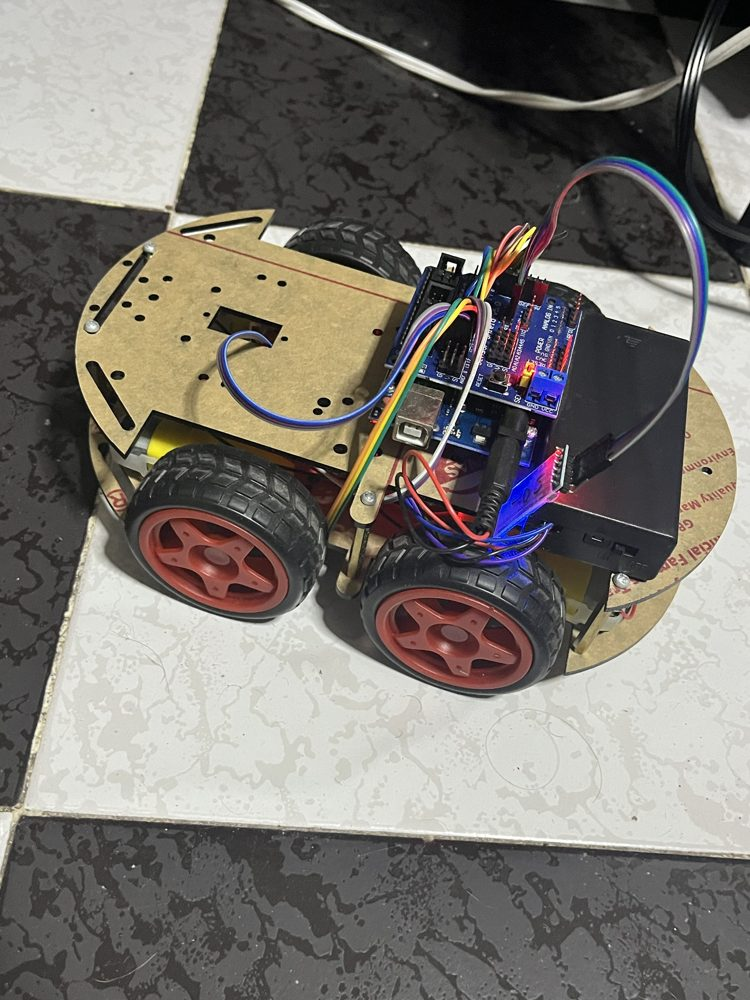
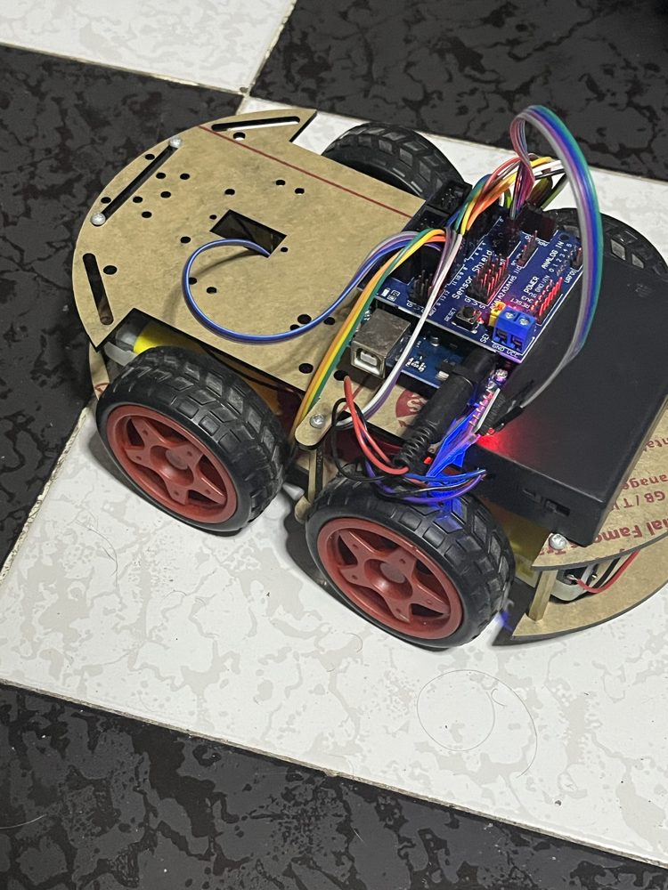

Robot 4WD: Bluetooth, sumo y seguidor de línea
El firmware de un robot de 4 ruedas con Arduino UNO y tres modos que se cambian desde el celular por Bluetooth: manual, sumo autónomo y seguidor de línea.
- Estado
- Funcional
- Periodo
- may 2026
- Versión
- robot_sumo_final
- Categorías
- Arduino · Robótica
Objetivo y contexto
Un robot reutilizable para varias pruebas sin reprogramarlo, cambiando de comportamiento con un solo comando.
Problema. Un mismo robot debía competir en sumo, seguir una línea y manejarse a control remoto.
Arquitectura del sistema
Una máquina de estados principal (manual, sumo, línea) recibe comandos de un carácter por el UART conectado al HC-05. Los modos sumo y línea tienen sus propias submáquinas de estados.
Diagrama de bloques
Pines y buses tomados del código fuente.
Hardware y componentes
| Componente | Función | Conexión | Evidencia |
|---|---|---|---|
| Arduino UNO + Sensor Shield V5 | Controlador | — | Verificado en código |
| Puente H L298N | 4 motores DC | ENA 5 · IN1 2 · IN2 4 · IN3 7 · IN4 8 · ENB 6 | Verificado en código |
| HC-SR04 sobre servo | Detección del rival | ECHO A0 · TRIG A1 · servo A2 | Verificado en código |
| 3 sensores de línea | Borde y línea | D0 · D11 · D1 | Verificado en código |
| Módulo HC-05 | Control remoto | UART del shield | Verificado en código |
Firmware, software y protocolos
- Protocolo
- Comandos de 1 carácter: F, B, L, R, S, diagonales I/G/J/H; 0/1/2 cambian de modo Verificado en código
- Sumo
- Estados buscar → atacar → retroceder → girar Verificado en código
- Seguidor
- Estados seguir → retroceder al perder la línea Verificado en código
- Utilidad
- reset_hc05: puente serial a 38400 baudios para comandos AT Verificado en código
Funcionamiento
- Sumo: el borde tiene prioridad; retrocede 400 ms y gira 350 ms hacia el lado contrario al sensor que lo detectó.
- Sumo: mide a 50°, 90° y 130°; si el rival está a menos de 50 cm lo encara y a menos de 25 cm ataca a 220/255.
- Sumo: sin objetivo, alterna el sentido de búsqueda cada 600 ms.
- Línea: corrige reduciendo a la mitad la velocidad de la rueda interior; en cruces sigue recto y si pierde la línea retrocede.
Decisiones técnicas
- Constantes nombradas
- Velocidades, distancias y tiempos se ajustan en pista sin tocar la lógica.
- Prioridad al borde
- Se evalúa antes que cualquier otro estado para no salir del área.
Fotografías y video


Pruebas y resultados
- Control manual por Bluetooth desde el celular, en video. Foto / video
- Funcionamiento completo de los tres modos confirmado por el autor. Declarado por el autor
Limitaciones y mejoras futuras
Limitaciones
- Control de línea por umbrales, sin PID.
Mejoras futuras
- Control PID para el seguidor.
- Registro de tiempos por vuelta y encuentros ganados.
Evolución por versiones
- robot_sumo
Primera versión del modo sumo.
- robot_borde
Escaneo con servo y evasión de borde.
- robot_sumo_final
Une manual, sumo y seguidor de línea.
Código y documentación
github.com/nshtpdrz/robot-4wd-sumo-seguidor
Incluye todas las versiones del firmware, diagrama de bloques e instrucciones para compilar. Las credenciales se leen de un archivo secrets.h que no se publica.